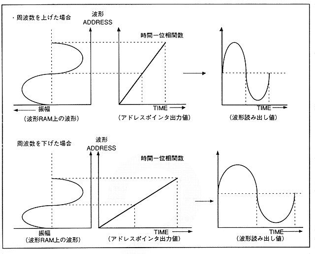
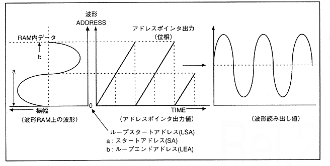

∙ When FM speech synthesis is performed, a short cycle waveform is looped and used. Therefore, the output value (function) of the address pointer is as shown in Figure 4.23.
Figure 4.23 Address pointer output value when FM speech synthesis is executed (1)
